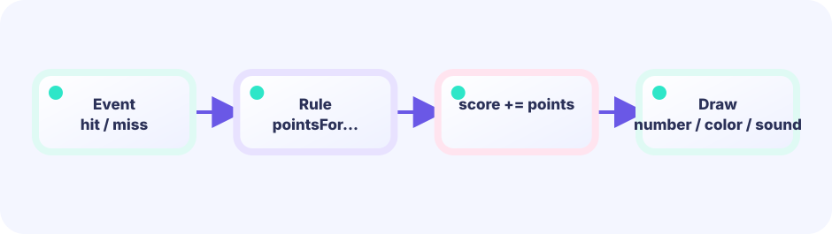
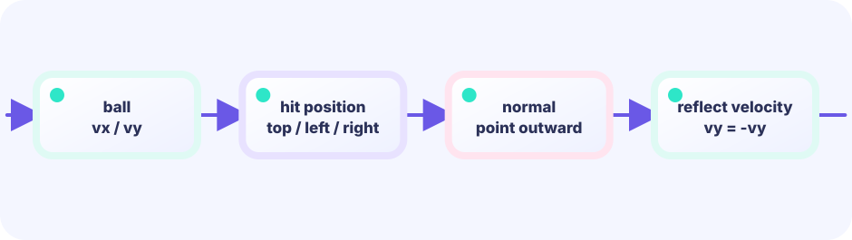

One record
Each brick is a struct — think of it as "a toolbox for one brick" that bundles together everything about that brick: its position (x, y) and whether it is broken (alive). Drawing happens later in Draw.
type brick struct★★★☆☆ / PLAYABLE
Pong’s reflection plus “many identical bricks.” The key is not more variables — it is one slice that holds every brick.
The state boundary still follows LEVEL 01: Update owns rules and Draw is a replaceable projection. This lesson only adds its new piece (bounce, bricks, or a growing body). Drawing and hits stay simple shapes.
PLAYABLE / WEBASSEMBLY
Bounce the ball with the paddle and erase the colored wall. You have three lives.
FIRST-TIME READER
Find where this one line is used, then follow how its value changes on screen. This is the shared game-state boundary: add rules in Update, then choose an independent presentation in Draw. The numbered steps below add one system at a time.
ONE RULE TO TRACE
Match the explanation to this line, then test the change in the game.
if remaining == 0 { state = Win }Draw every index
i means which block we are visiting. A loop walks from the first block to the last and reuses one drawing rule for all of them.
for i := range blocks {
if blocks[i].Alive {
drawBlock(blocks[i])
}
}

DEEP DIVE / MANY OBJECTS
A brick is a tiny record: position plus whether it is still alive. Put those records in a slice and inspect them with the same loop every tick. Repeat one rule many times — that is the core of multi-object games.
Each brick is a struct — think of it as "a toolbox for one brick" that bundles together everything about that brick: its position (x, y) and whether it is broken (alive). Drawing happens later in Draw.
type brick structNested loops fill rows and columns, appending into a slice. Forty-eight bricks do not mean forty-eight variables.
bricks []brickOnly overlapping bricks set alive = false. Update and draw look only at living ones.
alive = falseTRY IT / MANY OBJECTS
Twelve bricks are entries in one array. Tap sets alive to false and adds score.
Remaining count and score update on the right.
TRY IT · GO
bricks[row][col] = alive if hitBrick { bricks[r][c] = false; score++ } if allClear() { win() }
—
THE GRID RECIPE
for row := 0; row < 6; row++innerfor col := 0; col < 8; col++Place with x = origin + col * width and y = origin + row * height. Same idea as spreadsheet cells.
IN THE REAL GAME
After moving the ball, walk every brick. On a hit, destroy it, reverse vy, and stop for that frame. This lesson always flips ballVY on any brick hit — a common intro simplification; side-aware bounce is a later challenge.
What happens when every brick is gone? When no bricks are left alive (aliveBrickCount() == 0), the real game does not show a separate "you win" screen — instead it calls *g = *newGame() to reset everything back to the start and immediately begin a fresh wall of bricks. The win() call in the lab above is a short stand-in for that "treat it as cleared" moment; in the actual game it simply flows straight into the next round.
for i := range g.bricks {
b := &g.bricks[i]
if !b.alive {
continue
}
if hitBrick(g.ballX, g.ballY, b) {
b.alive = false
g.score += 10
g.ballVY = -g.ballVY
break
}
}TODAY — look here first
The code below is the entire game (drawn with simple shapes). Copy it to your editor — but first follow the three “look here first” points above.
Note: inline comments in this full listing are in Japanese for young learners. The English teaching snippets above are your guide.
package main
import (
"fmt"
"image/color"
"math"
"github.com/hajimehoshi/ebiten/v2"
"github.com/hajimehoshi/ebiten/v2/ebitenutil"
"github.com/hajimehoshi/ebiten/v2/vector"
"github.com/kumagi/EbiShowcase/internal/lessonlogic"
)
const (
screenWidth = 480
screenHeight = 720
brickW = 50.0
brickH = 24.0
ballR = 10.0
)
type brick struct {
x, y float64
alive bool
row int
}
type game struct {
paddleX float64
ballX float64
ballY float64
ballVX float64
ballVY float64
bricks []brick
score int
lives int
}
func newGame() *game {
g := &game{
paddleX: screenWidth / 2,
lives: 3,
}
for row := 0; row < 6; row++ {
for col := 0; col < 8; col++ {
g.bricks = append(g.bricks, brick{
x: 22 + float64(col)*56,
y: 90 + float64(row)*32,
alive: true,
row: row,
})
}
}
g.serve()
return g
}
func (g *game) serve() {
g.ballX = screenWidth / 2
g.ballY = 590
g.ballVX = 3.4
g.ballVY = -4.5
}
func (g *game) movePaddle() {
if ebiten.IsKeyPressed(ebiten.KeyArrowLeft) || ebiten.IsKeyPressed(ebiten.KeyA) {
g.paddleX -= 6
}
if ebiten.IsKeyPressed(ebiten.KeyArrowRight) || ebiten.IsKeyPressed(ebiten.KeyD) {
g.paddleX += 6
}
if ebiten.IsMouseButtonPressed(ebiten.MouseButtonLeft) {
x, _ := ebiten.CursorPosition()
g.paddleX = float64(x)
}
if ids := ebiten.AppendTouchIDs(nil); len(ids) > 0 {
x, _ := ebiten.TouchPosition(ids[0])
g.paddleX = float64(x)
}
g.paddleX = math.Max(55, math.Min(screenWidth-55, g.paddleX))
}
func (g *game) bounceWorld() {
g.ballX += g.ballVX
g.ballY += g.ballVY
// 左右の壁
if g.ballX < 12 || g.ballX > screenWidth-12 {
g.ballVX = -g.ballVX
g.ballX = math.Max(12, math.Min(screenWidth-12, g.ballX))
}
// 天井
if g.ballY < 52 {
g.ballVY = math.Abs(g.ballVY)
}
// パドル
hitPaddle := g.ballVY > 0 &&
g.ballY > 630 && g.ballY < 650 &&
math.Abs(g.ballX-g.paddleX) < 64
if hitPaddle {
g.ballY = 630
g.ballVY = -math.Abs(g.ballVY)
g.ballVX += (g.ballX - g.paddleX) * 0.06
}
}
func (g *game) hitBricks() {
for i := range g.bricks {
b := &g.bricks[i]
if !b.alive {
continue
}
hit := g.ballX+ballR > b.x &&
g.ballX-ballR < b.x+brickW &&
g.ballY+ballR > b.y &&
g.ballY-ballR < b.y+brickH
if hit {
b.alive = false
g.score += 10
g.ballVY = -g.ballVY
break
}
}
}
func (g *game) aliveBrickCount() int {
n := 0
for _, b := range g.bricks {
if b.alive {
n++
}
}
return n
}
// --- ここから Update ---
func (g *game) Update() error {
g.movePaddle()
g.bounceWorld()
g.hitBricks()
// ボールが下に落ちた
if g.ballY > screenHeight+15 {
var gameOver bool
g.lives, gameOver = lessonlogic.SpendLife(g.lives)
if gameOver {
*g = *newGame()
} else {
g.serve()
}
}
// ブロックを全部壊したらクリア → 最初から
if g.aliveBrickCount() == 0 {
*g = *newGame()
}
return nil
}
// --- ここから Draw ---
func (g *game) Draw(screen *ebiten.Image) {
screen.Fill(color.RGBA{7, 20, 38, 255})
colors := []color.RGBA{
{255, 105, 79, 255},
{255, 145, 72, 255},
{255, 210, 72, 255},
{45, 226, 194, 255},
{71, 161, 220, 255},
{151, 113, 230, 255},
}
for _, b := range g.bricks {
if !b.alive {
continue
}
vector.DrawFilledRect(screen, float32(b.x), float32(b.y), brickW, brickH, colors[b.row], false)
}
vector.DrawFilledRect(screen, float32(g.paddleX-58), 640, 116, 14, color.RGBA{45, 226, 194, 255}, false)
vector.DrawFilledCircle(screen, float32(g.ballX), float32(g.ballY), ballR, color.White, false)
ebitenutil.DebugPrintAt(screen, fmt.Sprintf("SCORE %04d LIVES %d", g.score, g.lives), 160, 25)
ebitenutil.DebugPrintAt(screen, "ARROWS / DRAG", 184, 690)
}
func (g *game) Layout(_, _ int) (int, int) {
return screenWidth, screenHeight
}
func main() {
ebiten.SetWindowSize(screenWidth, screenHeight)
ebiten.SetWindowTitle("Breakout — Ebitengine")
if err := ebiten.RunGame(newGame()); err != nil {
panic(err)
}
}
BUILD IT LINE BY LINE / UPDATE WORKSHOP
Even with many bricks, Update stays readable: advance the world first, then react to failure or victory.
Some braces intentionally stay open between pieces, so intermediate code may not compile yet. Each card explains what to paste, why it belongs here, and which Go feature helps. The snippets are extracted from the running game; after the final paste, Update exactly matches the real one.
Move the paddle, resolve world bounces, then brick hits. Each job reads the previous result in an explicit order.
func (g *game) Update() error {
g.movePaddle()
g.bounceWorld()
g.hitBricks()SpendLife returns both new lives and gameOver. The final life resets everything; otherwise only serve again.
// ボールが下に落ちた
if g.ballY > screenHeight+15 {
var gameOver bool
g.lives, gameOver = lessonlogic.SpendLife(g.lives)
if gameOver {
*g = *newGame()
} else {
g.serve()
}
}When aliveBrickCount is zero, replace the game. The rule works regardless of the original brick count.
// ブロックを全部壊したらクリア → 最初から
if g.aliveBrickCount() == 0 {
*g = *newGame()
}
return nil
}Update owns only input and advancing game state. Replace Draw with another presentation and the controls, timing, collisions, and outcomes assembled here remain unchanged.
WITHOUT A SLICE
Named variables run out fast. Changing the count means rewriting code.
WITH A SLICE
Ten bricks or a hundred bricks still share the same update and draw loops.
YOUR FIRST RULE
In games/core/breakout/main.go, immediately before the Update branch where g.ballY > screenHeight+15, set a Update-side lastChance bool when g.lives == 1 and widen the paddle once. Draw only displays the flag. Verify with go test ./... and a local run on the last life.
FEEDBACK